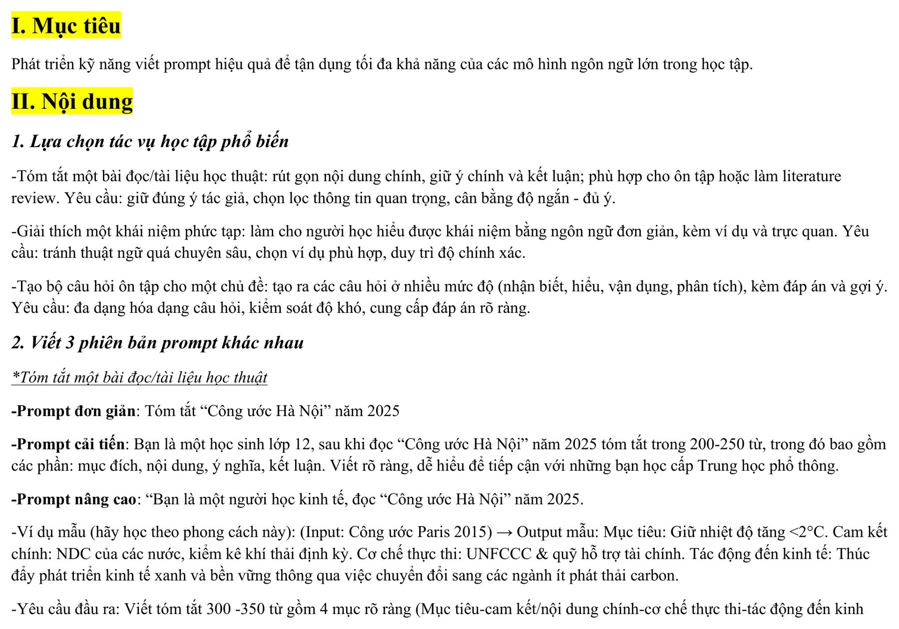
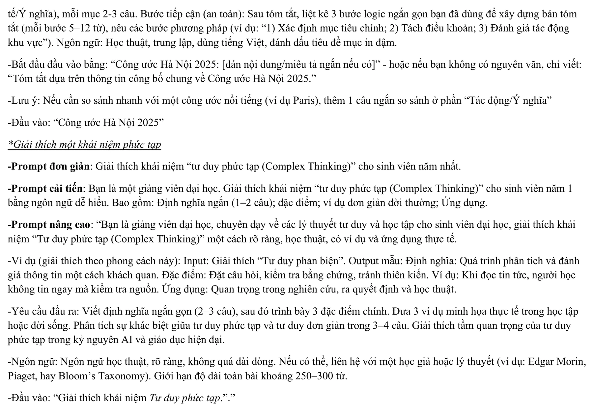
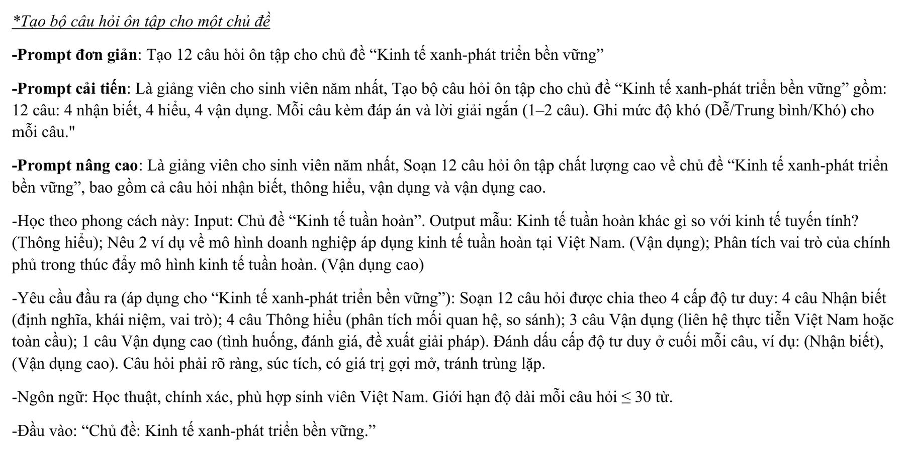
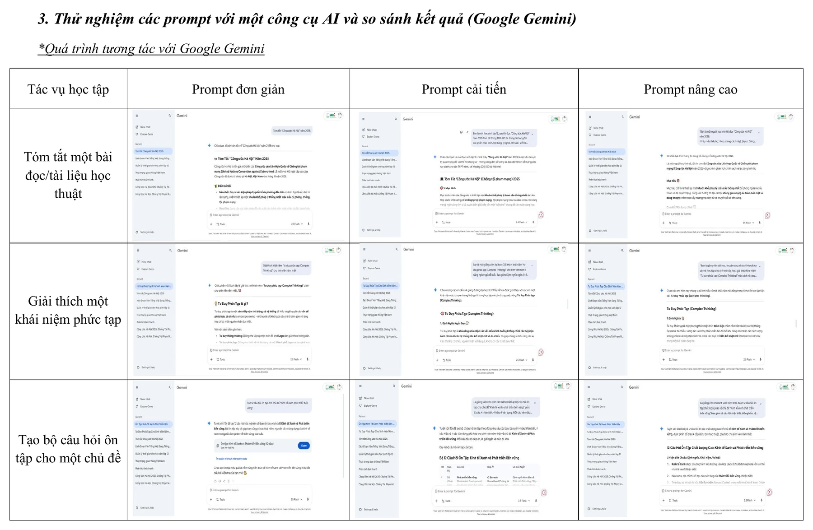
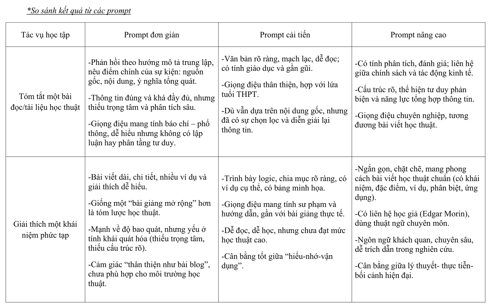
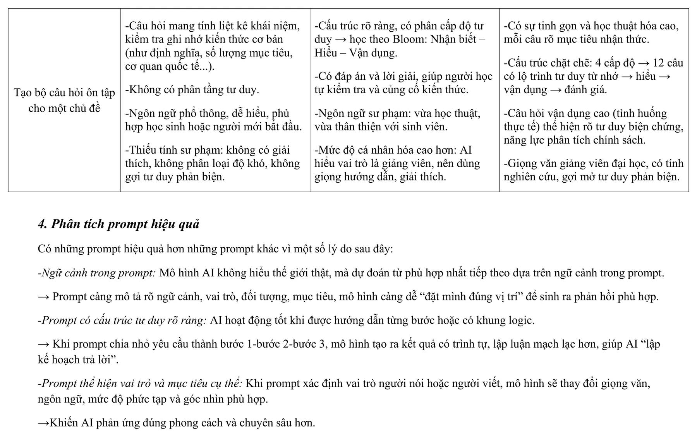
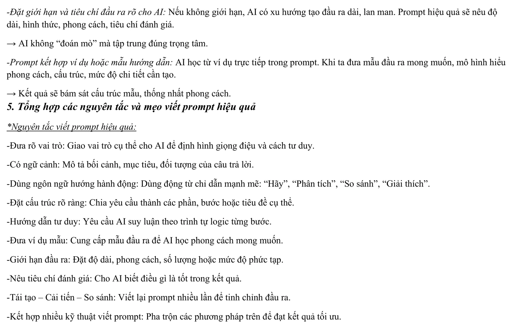
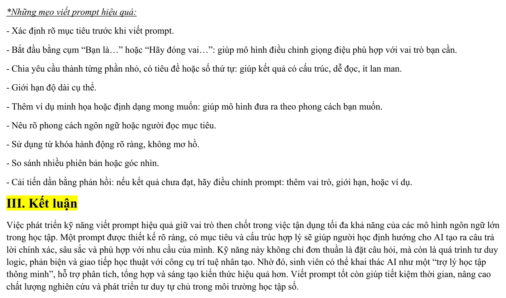

Năng lực cần hình thành
Bài tập giúp mình phát triển khả năng thiết kế Prompt có mục tiêu, bối cảnh và cấu trúc rõ ràng để khai thác hiệu quả mô hình ngôn ngữ lớn trong học tập. Thay vì chỉ đặt một câu hỏi ngắn, mình học cách xác định đối tượng người đọc, vai trò của AI, định dạng đầu ra và tiêu chí đánh giá.
Mục tiêu cụ thể
- Nhận diện ba tác vụ học tập phù hợp để thử nghiệm với AI: tóm tắt tài liệu, giải thích khái niệm và tạo câu hỏi ôn tập.
- Viết được ba cấp độ Prompt gồm đơn giản, cải tiến và nâng cao cho cùng một nhiệm vụ.
- Biết bổ sung vai trò, ngữ cảnh, đối tượng, độ dài, cấu trúc và tiêu chí đầu ra vào Prompt.
- Thử nghiệm chín Prompt trên Google Gemini và ghi lại kết quả.
- So sánh đầu ra theo mức độ đầy đủ, rõ ràng, học thuật, phù hợp đối tượng và khả năng bám sát yêu cầu.
- Hình thành thói quen kiểm tra, phản hồi và cải tiến Prompt thay vì chấp nhận ngay kết quả đầu tiên do AI tạo ra.
Các bước thực hiện
Quá trình được triển khai theo năm giai đoạn, từ lựa chọn tác vụ đến thiết kế các phiên bản Prompt, thử nghiệm trên Google Gemini, so sánh đầu ra và rút ra nguyên tắc sử dụng AI hiệu quả trong học tập.
Lựa chọn ba tác vụ học tập
Tác vụ thứ nhất là tóm tắt tài liệu về Công ước Hà Nội năm 2025, yêu cầu giữ đúng ý chính, lựa chọn thông tin quan trọng và cân bằng giữa độ ngắn với mức độ đầy đủ.
Tác vụ thứ hai là giải thích khái niệm Tư duy phức tạp bằng ngôn ngữ phù hợp với sinh viên, có định nghĩa, đặc điểm, ví dụ và ứng dụng.
Tác vụ thứ ba là xây dựng 12 câu hỏi ôn tập về Kinh tế xanh và phát triển bền vững, có sự phân tầng từ nhận biết đến vận dụng cao.
Thiết kế ba cấp độ Prompt
Prompt đơn giản chỉ nêu yêu cầu chính, giúp quan sát cách AI tự diễn giải một chỉ dẫn ngắn.
Prompt cải tiến bổ sung vai trò, đối tượng người đọc, số lượng, độ dài và cấu trúc đầu ra để kết quả rõ ràng hơn.
Prompt nâng cao tiếp tục thêm ví dụ mẫu, tiêu chí chất lượng, giới hạn, phong cách ngôn ngữ và các phần nội dung bắt buộc.
Thử nghiệm trên Google Gemini
Mỗi tác vụ được chạy với cả ba cấp độ Prompt, tạo thành tổng cộng chín lần thử nghiệm. Mình giữ nguyên chủ đề của từng tác vụ và chỉ thay đổi mức độ hướng dẫn để quan sát tác động trực tiếp của Prompt.
Các phản hồi được lưu lại bằng ảnh chụp màn hình, sau đó sắp xếp thành ma trận gồm ba tác vụ và ba cấp độ.
So sánh chất lượng đầu ra
Kết quả được đối chiếu theo các tiêu chí: mức độ bám sát yêu cầu, tính đầy đủ, cấu trúc, giọng điệu, độ phù hợp với người học và khả năng sử dụng lại.
Việc so sánh cho thấy Prompt càng cụ thể thì đầu ra càng có định hướng rõ, ít lan man và phù hợp hơn với mục đích học thuật.
Phân tích và tổng hợp nguyên tắc
Từ kết quả thực nghiệm, mình xác định những thành phần quan trọng của Prompt gồm vai trò, ngữ cảnh, nhiệm vụ, định dạng, ví dụ mẫu, giới hạn và tiêu chí đánh giá.
Các nguyên tắc được tổng hợp thành bộ hướng dẫn để có thể áp dụng cho những nhiệm vụ học tập khác trong tương lai.
Quá trình thực hiện trên máy tính
Dưới đây là quá trình thiết kế ba cấp độ Prompt, thử nghiệm trên Google Gemini, so sánh đầu ra và tổng hợp nguyên tắc viết Prompt hiệu quả.
Nhấn vào từng ảnh để xem kích thước lớn.








Đối chiếu với yêu cầu bài tập
- Có ba tác vụ học tập khác nhau để kiểm tra khả năng ứng dụng rộng của AI.
- Mỗi tác vụ đều có Prompt đơn giản, cải tiến và nâng cao.
- Có ảnh chụp đầy đủ chín lần thử nghiệm trên Google Gemini.
- Có bảng so sánh đầu ra theo nội dung, cấu trúc, giọng điệu và mức độ học thuật.
- Có phần phân tích lý do Prompt nâng cao tạo kết quả ổn định hơn.
- Có bộ nguyên tắc và mẹo có thể áp dụng cho các nhiệm vụ học tập khác.
Những gì đạt được
Bài tập cho thấy chất lượng đầu ra không chỉ phụ thuộc vào công cụ AI, mà còn phụ thuộc đáng kể vào cách người dùng xác định mục tiêu và truyền đạt yêu cầu. Khi Prompt được thiết kế rõ hơn, kết quả có cấu trúc tốt và phù hợp hơn với bối cảnh học tập.
- Hoàn thành ba nhóm tác vụ và chín lần thử nghiệm trên Google Gemini.
- Nhận diện được giới hạn của Prompt đơn giản: nhanh nhưng dễ chung chung, thiếu trọng tâm và thiếu cấu trúc.
- Prompt cải tiến giúp xác định rõ đối tượng, độ dài, cách trình bày và mức độ chi tiết.
- Prompt nâng cao cho kết quả có tính phân tích, học thuật và khả năng kiểm soát tốt hơn.
- Biết sử dụng ví dụ mẫu và tiêu chí đầu ra để giảm khoảng cách giữa kỳ vọng và kết quả.
- Hiểu rằng người dùng vẫn phải kiểm chứng thông tin, đánh giá lập luận và chỉnh sửa nội dung do AI tạo ra.
So sánh ba cấp độ Prompt
| Cấp độ | Đặc điểm | Kết quả quan sát được |
|---|---|---|
| Prompt đơn giản | Chỉ nêu nhiệm vụ chính, ít bối cảnh và ràng buộc. | Phản hồi nhanh, dễ hiểu nhưng thường chung chung và thiếu trọng tâm. |
| Prompt cải tiến | Bổ sung vai trò, đối tượng, cấu trúc, số lượng hoặc độ dài. | Đầu ra rõ ràng, dễ đọc, phù hợp người học và ổn định hơn. |
| Prompt nâng cao | Có ví dụ mẫu, tiêu chí chất lượng, giới hạn và định dạng cụ thể. | Đầu ra chặt chẽ, có chiều sâu, bám sát mục tiêu và gần với yêu cầu học thuật. |
Phân tích và hướng nâng cấp
Vì sao một Prompt có thể hiệu quả hơn?
Prompt hiệu quả không làm AI trở nên “thông minh hơn”, mà giúp giảm số cách diễn giải mơ hồ. Khi ngữ cảnh, vai trò và tiêu chí đầu ra được xác định cụ thể, mô hình có nhiều tín hiệu hơn để lựa chọn nội dung, giọng điệu và cấu trúc phù hợp.
| Thành phần | Vai trò trong Prompt | Tác động đến đầu ra |
|---|---|---|
| Vai trò | Định vị AI là giảng viên, chuyên gia hoặc người hỗ trợ học tập. | Điều chỉnh giọng điệu, góc nhìn và mức độ chuyên môn. |
| Ngữ cảnh | Nêu chủ đề, mục tiêu, đối tượng và tình huống sử dụng. | Giảm câu trả lời chung chung hoặc lệch trọng tâm. |
| Nhiệm vụ | Mô tả chính xác điều AI cần thực hiện. | Tăng khả năng bám sát yêu cầu. |
| Cấu trúc và định dạng | Quy định số mục, tiêu đề, bảng, độ dài hoặc số lượng. | Tạo đầu ra nhất quán và thuận tiện khi sử dụng. |
| Ví dụ mẫu | Cho AI quan sát kiểu kết quả mong muốn. | Giúp đầu ra bám sát phong cách và mức độ chi tiết. |
| Giới hạn và tiêu chí | Quy định ngôn ngữ, độ khó, số từ và tiêu chuẩn chất lượng. | Hạn chế lan man và hỗ trợ kiểm soát kết quả. |
Bài học rút ra
- Cần xác định rõ mục tiêu trước khi bắt đầu viết Prompt.
- Nên chia yêu cầu lớn thành các phần nhỏ, có thứ tự rõ ràng.
- Cần nêu người đọc mục tiêu để điều chỉnh ngôn ngữ và mức độ phức tạp.
- Ví dụ mẫu hữu ích khi cần đầu ra có cấu trúc hoặc phong cách cụ thể.
- Kết quả đầu tiên chỉ là bản nháp; cần phản hồi và cải tiến Prompt theo từng vòng.
- Nội dung do AI tạo phải được kiểm tra về độ chính xác, nguồn thông tin, lập luận và tính phù hợp trước khi sử dụng.
Hướng cải thiện trong những lần tiếp theo
Khi sử dụng AI cho một nhiệm vụ mới, mình sẽ xây dựng Prompt theo trình tự: xác định mục tiêu, chọn vai trò, cung cấp ngữ cảnh, mô tả nhiệm vụ, quy định định dạng và đặt tiêu chí kiểm tra. Sau lần chạy đầu tiên, mình sẽ đánh giá phần nào chưa đạt, bổ sung phản hồi cụ thể và so sánh các phiên bản trước khi chọn kết quả cuối.
Mình cũng sẽ phân biệt rõ giữa nội dung có thể dùng để gợi ý và nội dung cần nguồn kiểm chứng. Cách tiếp cận này giúp AI trở thành công cụ hỗ trợ tư duy, thay vì thay thế hoàn toàn quá trình đọc, phân tích và chịu trách nhiệm của người học.
Sản phẩm đầy đủ
Bản PDF bên dưới được chuyển trực tiếp từ báo cáo đã hoàn thành. Nếu trình duyệt không hiển thị khung xem trước, hãy dùng nút mở PDF.